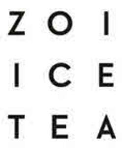

Trade Mark Journal No.2025/030 25 July 2025
UK00004197031 30 April 2025 (30,32)

- Class 30
- Coffee, tea, cocoa and substitutes therefor; rice, pasta and noodles; tapioca and sago; flour and preparations made from cereals; bread, pastries and confectionery; chocolate; ice cream, sorbets and other edible ices; sugar, honey, treacle; yeast, baking-powder; salt, seasonings, spices, preserved herbs; vinegar, sauces and other condiments; ice (frozen water); tea-based beverages; chocolate-based beverages; coffee-based beverages; cocoa-based beverages; chamomile-based beverages; chocolate beverages with milk; coffee beverages with milk; cocoa beverages with milk; tea*; iced tea; kelp tea; edible ices; sorbets ices; coffee; coffee capsules, filled; ice cream; ice pops; ice for refreshment.
- Class 32
- Beers; non-alcoholic beverages; mineral and aerated waters; fruit beverages and fruit juices; syrups and other preparations for making non-alcoholic beverages; protein-enriched sports beverages; isotonic beverages; non-alcoholic fruit juice beverages; non-alcoholic beverages flavored with tea; non-alcoholic beverages flavored with coffee; fruit juices; soft drinks; smoothies; sherbets beverages; powders for effervescing beverages; energy drinks; non-alcoholic dried fruit beverages; soya-based beverages, other than milk substitutes; non-alcoholic beverages; non-alcoholic honey-based beverages; aperitifs, non-alcoholic; whey beverages; rice-based beverages, other than milk substitutes; aloe vera drinks, non-alcoholic; waters beverages; aerated water; table waters; mineral water beverages; barley wine beer; beer; kvass; malt beer; ginger beer; non-alcoholic fruit extracts; non-alcoholic essences for making beverages; shandy; sarsaparilla non-alcoholic beverage; orgeat; fruit nectars, non-alcoholic; vegetable juices beverages; tomato juice beverage; cider, non-alcoholic; must; grape must, unfermented; cocktails, non-alcoholic; beer-based cocktails; lemonades; beer wort; soda water; lithia water; malt wort; seltzer water; non-alcoholic preparations for making beverages.
NAO for Water and Soft Drinks Joint Stock Company
Representative: Beck Greener LLP